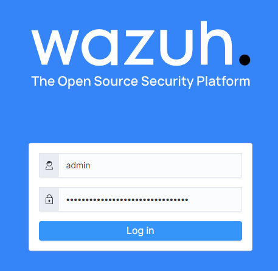
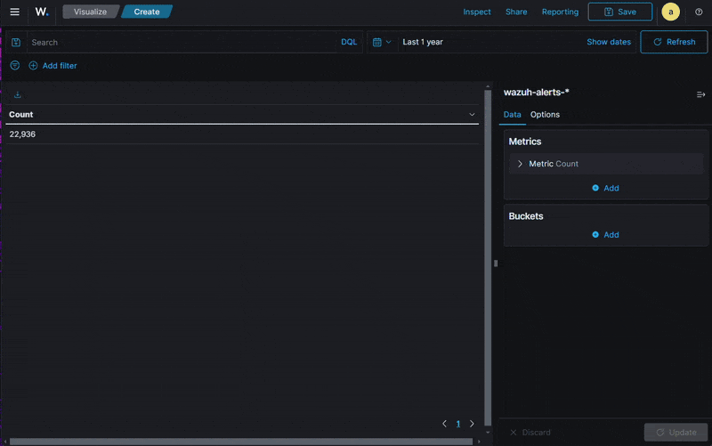
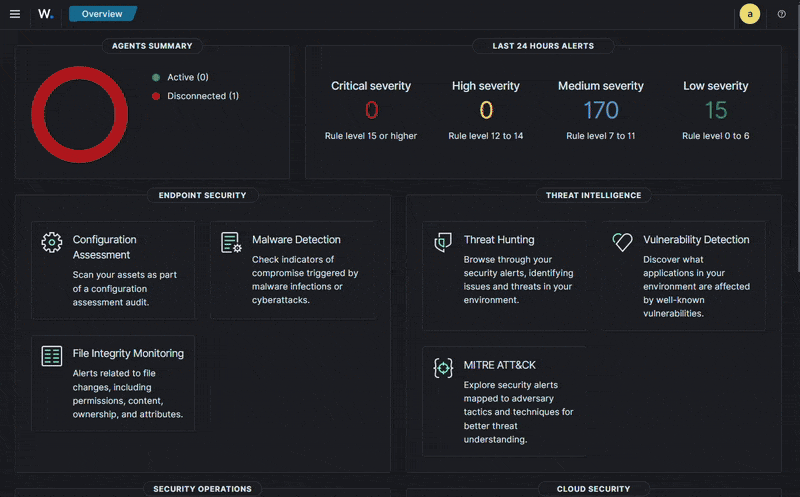
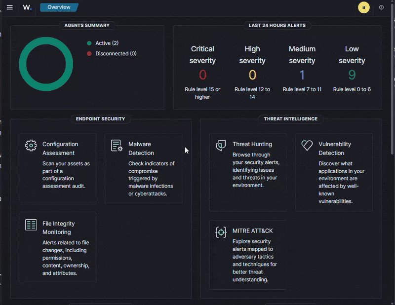
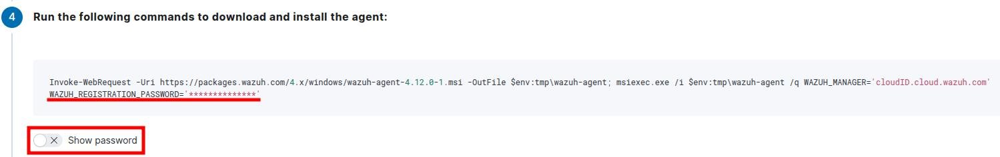
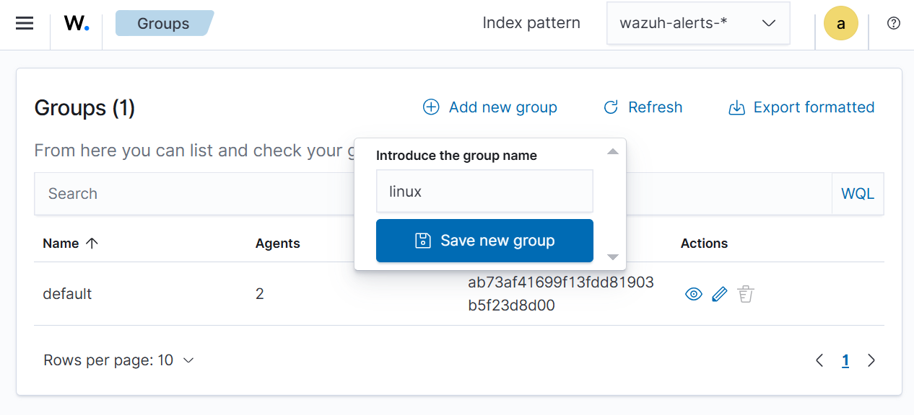
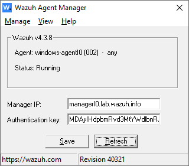
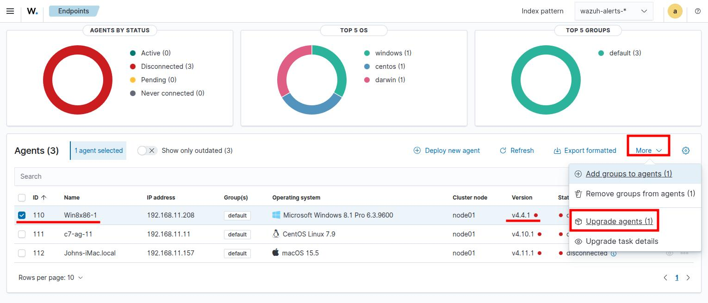
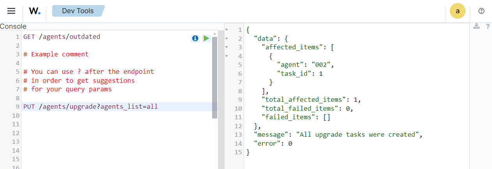

Session 1
Wazuh Server Configuration
Lab 1A - Take first look at the Wazuh Web UI
The Wazuh indexer and dashboard components are preconfigured for this training.
Surf to the following:
https://dashboardA6.lab.wazuh.infoand login to the Wazuh dashboard for the first time (credentials user:adminpassword:sGgtwu+oN0oIpjXD/pxlHQ==6).
The navigation panel will appear on the left when you click on the three line Hamburger menu ( ☰ ).
These navigation items include Wazuh Dashboard and Wazuh Indexer options and settings as well as Wazuh-specific dashboards that show information about alerts or content accessible only via the Wazuh API.
Click the Server management section to access configurations, logs and status information related to the Wazuh Manager, Rules and Decoders. This is achieved by connecting to the Wazuh API.
Various Wazuh-specific dashboards can be reached from the Threat intelligence and Security operations sections.
Take some time to explore the Wazuh Dashboard now. The Summary option inside the Agents management section will be more interesting once we have agents registered.
Select the Discover option inside the Explore section. Now you will be able to poke around in the indexed data using the standard facilities of the Wazuh dashboard.
There will be more to see once we have enrolled a few agents.
Lab 1B - Wazuh Custom Dashboard
In this following exercise, we will create a custom dashboard with some sample visualizations. First, we will create each of the visualizations and then the dashboard that will contain them.
Our first visualization will be a data table that will show the amount of alerts for a given description by agent. To do this, first navigate in your hamburger menu (☰) > Explore > Visualize and select the + Create visualization button.
Select Data Table from the New Visualization menu and choose the wazuh-alerts-* pattern as the data source.
In the Metrics settings keep the default Count aggregation and click on the Add button for the Buckets section and select split rows. Select the Terms sub aggregation and agent.name field. Then, select the Add button once again for a new Bucket with split rows. On this new bucket, select the Terms sub aggregation, and then the rule.description field. Click on Update on the bottom of the page. Finally, click on Save on the top of the page and give the table a descriptive name to save the changes.

Our next visualization will be a histogram that will show us the distribution of the level (severity) of the rules in our dataset.
Go back to the New visualization menu (located at hamburger menu > Explore > Visualize > + Create visualization button) and select a Line visualization. Select the wazuh-alerts-* as the data source. Keep the default Count aggregation and create a new bucket by selecting the Add button and the X-axis option. The Aggregation will be Histogram and for the Field select rule.level. Finally, select Update and then Save.
Our last example visualization will be a bar chart that will show us the total amount of alerts by originating city (this is for all alerts that have been enriched with geo location data based on them having a public origin IP address).
In the Create new visualization menu, select the Horizontal Bar Chart and wazuh-alerts-* as the data source.
Add a Split series bucket with the Terms Aggregation and the GeoLocation.city_name Field. Update and Save.
Now that all the intended visualizations have been created, create the dashboard that will contain them. To do this, navigate to Explore > Dashboards in your hamburger menu. Select the + Create Dashboard button. Then use the Add button on the top of the page, and from the Add panels menu, choose the relevant visualizations by name. Once all that apply have been selected, will click on the left side of the screen to close the add menu.

Lab 1C - Wazuh Custom Dashboard
In this exercise, we will generate a report based on the dashboard created in the previous exercise. First, we will create the report definition. To do this, navigate to Main Menu > Explore > Reporting. Click the Create button in the Report Definitions section.

Provide a descriptive name for the report. For the Report Source, select Dashboard, and choose the desired dashboard from the dropdown menu. For the Time Range, select Last 7 Days. Keep the File Format as PDF. In the next section, you can optionally set a header and footer. For deeper customization, such as adding company logos or copyright information for a cloud-based Wazuh platform, contact support, as there are specific image file format and size requirements.
For now, keep the Report Trigger option set to On Demand and click the Create button. A new browser window will open, and the report will begin generating. The selected file type will be downloaded once the process is complete.
Return to the Reporting menu, where the newly generated report should appear in the Reports section. It can be downloaded again if needed.
Next, select the report definition from the previous step and click the Edit button. To set recurrence, select Schedule in the Report Trigger section. You can define a recurrence based on an interval and hour (using the timezone set in the Dashboard’s advanced settings) or use cron syntax to specify a time (in which case you must specify a timezone).
Since this is a weekly report, select the By Interval option for the Frequency and set it to every 7 days with the desired start time. Reports will be generated as scheduled and will appear in the Reports section, where they can be accessed at any time.
Agent Registration and Connection to Manager
Lab 1D - Wazuh Server Configuration
The “Wazuh Server” consists of the following components:
Wazuh Manager - main package
Wazuh API - provides RESTful API access to the Wazuh Manager, needed by Web UI
Filebeat - conveys output from Wazuh Manager to the Wazuh indexer system
All of the above is already installed on your manager system, with Wazuh Manager and Wazuh API having default configurations.
In your Wazuh interface, navigate to Server Management > Settings, and click on the Edit configuration button at the top of the page. This will open the main configuration file:
ossec.conf.
In the
<alerts>section change the<log_alert_level>from 3 to 1. Also in the<auth>section, change the<use_password>line from no to yes.For cloud-based Wazuh deployments, a default registration password is provided via email in pdf format and can also be obtained in the UI, in the Deploy new agent page.

For on-prem deployment the following procedure needs to be followed to implement a registration password.
Make yourself root (always sudo to root when you ssh into any of your lab machines)
sudo suCreate a corresponding self-registration password file.
echo "secret" > /var/ossec/etc/authd.passRestart wazuh-manager
systemctl restart wazuh-managerConfirm Wazuh manager processes are running
systemctl status wazuh-managerConfirm the Wazuh API is responsive. First login to get an API authentication token via curl, and use the token in a subsequent curl to make a basic request.
APIUSER="wazuh" APIPASS="sGgtwu+oN0oIpjXD/pxlHQ==6" TOKEN=$(curl -sS -u $APIUSER:$APIPASS -k -X POST "https://managerA6.lab.wazuh.info:55000/security/user/authenticate?raw=true") curl -sS -k -X GET "https://managerA6.lab.wazuh.info:55000/" -H "Authorization: Bearer $TOKEN" | jq{ "data": { "title": "Wazuh API REST", "api_version": "4.9.0", "revision": 40313, "license_name": "GPL 2.0", "license_url": "https://github.com/wazuh/wazuh/blob/4.3/LICENSE", "hostname": "managerT0", "timestamp": "2024-10-03T10:20:05Z" }, "error": 0 }NOTE: Cloud solutions should request access to the API to support and then use the following command:
curl -ku <user>:<pass> -XGET https://<cloudid>.cloud.wazuh.com/api/elasticThis can also be done in the interface by navigating to Server management > Dev Tools and pasting the request there:
GET /And selecting the green triangle icon to run the request. There is no need to request a token since the Dashboard will handle authentication.
Agent Registration and Connection to Manager
Lab 1E - Deployment Variables
Create linux and windows agent groups to prepare for agent registrations.
The Wazuh Web UI allows you to manage agent-group memberships. Use it now to create agent groups that will be referred to as part of registering your agents. Access the group management section of the Wazuh Web UI at Agents management → Groups and add “linux” and “windows” groups as follows:
Click on “Add new group” in the upper right side and type in your new group name, then click “Save new group”:

A message will appear in the lower left corner indicating successful addition of the group and the new group will then appear in the list. This new group will start with a stub agent.conf file where you can later add configuration sections specific to this group.
Install and Register Wazuh 4.3.8 Windows Agent via the MSI package
Remote desktop into your Windows lab system.
Open Windows PowerShell as administrator, and use it to download the Wazuh installer file. We are intentionally downloading a somewhat older version of Wazuh so we can practice upgrading it in an upcoming lab.
Invoke-WebRequest -Uri https://packages.wazuh.com/4.x/windows/wazuh-agent-4.5.4-1.msi -OutFile wazuh-agent.msiFirst, ensure that the agent is not already installed, and then run the MSI installer, providing it with deployment variables telling it where to register, what password to use for registration, where to report in post-registration, and what agent group(s) to be membered into. Note that the msi call below wraps across multiple lines, so make sure to copy that across as one line (or use the copy button on the top right).
.\wazuh-agent.msi /q ADDRESS="managerA6.lab.wazuh.info" WAZUH_MANAGER="managerA6.lab.wazuh.info" WAZUH_REGISTRATION_PASSWORD="secret" WAZUH_AGENT_GROUP="windows"Then start the Wazuh agent service:
NET START WazuhSvcCheck the agent’s state file to confirm it is now connected to the manager. You should eventually see status=’connected’ in the output.
type 'C:\Program Files (x86)\ossec-agent\wazuh-agent.state'You should also be able to find your windows-agent listed in the Wazuh web UI and listed as Active.
Lastly, open the Windows File Explorer and go to
C:\\Program Files (x86)\\ossec-agentFind and open thewin32uiexecutable, it should look something like this:
You may pin this program to the taskbar or create a desktop shortcut for ease of access. This simple interface allows for quick access to the service status, log and configuration files.
Lab 1F - Agent-auth tool
Configure and register the “indexer” machine with agent-auth
On the indexer machine (
wazuh-user@indexerA6.lab.wazuh.info) navigate to/var/ossec/etc/ossec.confand change the value of the<address>line fromMANAGER_IPtomanagerA6.lab.wazuh.info.Then prompt (as root) and do self registration as follows:
/var/ossec/bin/agent-auth -m managerA6.lab.wazuh.info -P secret -G linux2022/06/07 11:31:53 agent-auth: INFO: Started (pid: 23115). 2022/06/07 11:31:53 agent-auth: INFO: Requesting a key from server: managerA6.lab.wazuh.info 2022/06/07 11:31:53 agent-auth: INFO: Using agent name as: indexerA6 2022/06/07 11:31:53 agent-auth: INFO: Waiting for server reply 2022/06/07 11:31:53 agent-auth: INFO: Valid key receivedThen restart the agent with
systemctl restart wazuh-agent. It should successfully connect.Confirm the connection with
cat /var/ossec/var/run/wazuh-agentd.statejust as you did for linux-agent.
Lab 1G - Auto enrollment
Register linux-agent with your Wazuh manager using auto enrollment:
On the Linux endpoint (
wazuh-user@linux-agentA6.lab.wazuh.info) create an agent registration password file (This must match what is in/var/ossec/etc/authd.passon the Wazuh Server Master node.)echo "secret" > /var/ossec/etc/agent.passIn
/var/ossec/etc/ossec.conf, change the value of the<address>line fromMANAGER_IPtomanagerA6.lab.wazuh.info. This is the Wazuh Server Node address the agent will report to once it has been enrolled.By default, unregistered agents will attempt to enroll with the Wazuh Server Node specified above. In order for the agent to be added to the
linuxgroup and use a custom path for the registration password file, we must also insert the following configuration options inside the client section. You can paste it right before the closing tag</client>line in the same file:<enrollment> <authorization_pass_path>/var/ossec/etc/agent.pass</authorization_pass_path> <groups>linux</groups> </enrollment>This section not only tells the agent to use the password file, but also tells it to member itself into the linux agent group. Additionally you can optionally specify here which specific manager to use for self registration when there is a manager node cluster.
Restart the agent and confirm success of the enrollment by checking the log:
systemctl restart wazuh-agent grep "Requesting a key" /var/ossec/logs/ossec.log -A 5“Valid key received” confirms it enrolled successfully.
On the agent check the agent’s state file to confirm it is now connected to the manager.
cat /var/ossec/var/run/wazuh-agentd.stateYou shoud get an output similar to the following one:
# State file for wazuh-agentd # Agent status: # - pending: waiting to get connected. # - connected: connection established with manager in the last 10 seconds. # - disconnected: connection lost or no ACK received in the last 60 seconds. status='connected' # Last time a keepalive was sent last_keepalive='2022-06-07 10:49:09' # Last time a control message was received last_ack='2022-06-07 10:49:09' # Number of generated events msg_count='764' # Number of messages (events + control messages) sent to the manager msg_sent='769' # Number of events currently buffered # Empty if anti-flooding mechanism is disabled msg_buffer='0'If it is not connected, then examine
/var/ossec/logs/ossec.logfor hints about the problem. In this log, a successful connection to the manager should be accounted for like this:2022/06/07 10:48:48 wazuh-agentd: INFO: (4102): Connected to the server (managerA6.lab.wazuh.info/3.133.158.115:1514/tcp).
Pushing Agent Upgrades
Lab 1H - Push Wazuh agent upgrade from manager
Our Windows and indexer lab systems are running an older version of Wazuh Agent. Let’s upgrade the Windows system now.
Agent upgrade using the Agent management > Summary section.
Navigate to Agent management > Summary and select the agent or agents you want to upgrade. Then click on More and select Upgrade agents.

Follow this procedure to upgrade the Indexer agent.
Agent push upgrades using the Wazuh API
While there is a legacy CLI tool (
agent_upgrade) that can be run from Wazuh managers, it is not available for Wazuh SaaS users and it only updates agents connected to the cluster node where it is run. Instead it is advisable to use the Wazuh API to push agent upgrades in a way that automatically routes the upgrade task to the correct manager for the target agent(s). Let’s try that now.In order to initiate upgrades through the Wazuh dashboard you may use the Dev Tools under Server management section. You may request that all agents currently connected are updated with the request:
PUT /agents/upgrade?agents_list=all
To upgrade only the Windows’ agent, use the following request:
GET /agents/upgrade_result?agents_list=002You should see an output similar to this:
{ "data": { "affected_items": [ { "message": "Success", "agent": "002", "task_id": 1, "node": "master", "module": "upgrade_module", "command": "upgrade", "status": "Updating", "create_time": "2022-06-07T11:38:47Z", "update_time": "2022-06-07T11:38:47Z" } ], "total_affected_items": 1, "total_failed_items": 0, "failed_items": [] }, "message": "All upgrade tasks were returned", "error": 0 }The success can be further confirmed by going to the Summary options inside the Agents management section, where you should see your Windows agent now listed running the updated Wazuh version.
As long as an agent is connected to the manager, Wazuh should be able to push an upgrade even if the agent is on a different network than the manager and behind a NAT/firewall device. This is because the upgrade is pushed across the existing agent-to-manager connection that is present for a connected agent.
Centralized Agent Configuration
Meet agent.conf
This file contains agent configuration material that would otherwise be locatedin agents’ local ossec.conf file. Agents can be membered into one or more agent
groups, and each agent group has its own agent.conf file on the manager that is
shared with agents in that group. The path to a particular agent.conf is as
follows, where GROUP is the name of the relevant agent group:
/var/ossec/etc/shared/*GROUP*/agent.conf
Each agent is by default assigned to the “default” agent group, which has agent.conf here:
/var/ossec/etc/shared/default/agent.conf
Agents periodically check with the manager for a new version of this file and
pull it down to the local /var/ossec/etc/shared/ directory if there are changes.
Agents automatically restart upon acquiring a new agent.conf so that changes
propagate quickly.
Never edit agent.conf on an agent, as it will be automatically overwritten by
agent.conf from the manager.
When the Wazuh agent service starts or restarts, it scans its local copy of the:file:agent.conf file(s) and merges it’s own ossec.conf file togetherwith all config sections in the agent.conf file(s) that apply to that
agent.
Watch /var/ossec/logs/ossec.log on an agent for evidence that the
intended config sections in agent.conf actually were applied to that
agent. By default, syscheck-monitored directories are listed in the log, as
well as items monitored by logcollector. Many other settings in
agent.conf are not reflected in ossec.log unless debugging is turned up.
Enumerating agents connected to the manager
Registered agent may be seen in the web interface by selecting the Agents section under the Wazuh menu.
You may also list agents by querying the /agents API endpoint:
APIUSER="wazuh"
APIPASS="sGgtwu+oN0oIpjXD/pxlHQ==6"
TOKEN=$(curl -sS -u $APIUSER:$APIPASS -k -X POST "https://<cloudID>.cloud.wazuh.com/api/wazuh/security/user/authenticate?raw=true")
curl -sS -k -X GET "https://<cloudID>.cloud.wazuh.com/api/wazuh/agents?select=id,name" -H "Authorization: Bearer $TOKEN" | jq
{
"data": {
"affected_items": [
{
"name": "wazuh-managerA6",
"id": "000"
},
{
"name": "linux-agentA6",
"id": "001"
},
{
"name": "windows-agentA6",
"id": "002"
},
{
"name": "indexerA6",
"id": "003"
}
],
"total_affected_items": 4,
"total_failed_items": 0,
"failed_items": []
},
"message": "All selected agents information was returned",
"error": 0
}
Lab 1I - deploy agent groups and agent.conf files
You already created a “windows” and “linux” agent group, and during registration your agents were assigned to the appropriate agent group. In future labs, these agents will be added to additional new groups as well. For now, confirm the group memberships are as intended via Wazuh web UI.
Each agent is positioned to fetch its own
agent.conffrom the manager according to the group or groups it is a member of. Our next step is to provide a separateagent.confon the Wazuh manager for each agent group so that we can start centrally maintaining the vast majority of agent configuration details on the Wazuh manager in an organized way.Replace the entire content of the large
/var/ossec/etc/ossec.conffiles of each agent with the following small stub configurations:Note
On Linux devices, first, make a backup of the
ossec.conffile.cp -p /var/ossec/etc/ossec.conf /var/ossec/etc/ossec.conf.backupThen, empty out ossec.conf first withecho "" > /var/ossec/etc/ossec.confbefore opening the file with the text editor of your choice and pasting in the new content. This will preserve file permissions.For linux-agent (
/var/ossec/etc/ossec.conf):<ossec_config> <client> <server> <address>managerA6.lab.wazuh.info</address> <port>1514</port> <protocol>tcp</protocol> </server> <config-profile>ubuntu, ubuntu18, ubuntu18.04</config-profile> <notify_time>10</notify_time> <time-reconnect>60</time-reconnect> <auto_restart>yes</auto_restart> </client> <agent-upgrade> <ca_verification> <enabled>yes</enabled> <ca_store>etc/wpk_root.pem</ca_store> </ca_verification> </agent-upgrade> </ossec_config>For indexer (
/var/ossec/etc/ossec.conf):<ossec_config> <client> <server> <address>managerA6.lab.wazuh.info</address> <port>1514</port> <protocol>tcp</protocol> </server> <config-profile>amzn, amzn2, indexer</config-profile> <notify_time>10</notify_time> <time-reconnect>60</time-reconnect> <auto_restart>yes</auto_restart> </client> <agent-upgrade> <ca_verification> <enabled>yes</enabled> <ca_store>etc/wpk_root.pem</ca_store> </ca_verification> </agent-upgrade> </ossec_config>For windows-agent (via Wazuh Agent Manager -> View -> View Config):
C:\Program Files (x86)\ossec-agent\win32ui.exe<ossec_config> <client> <server> <address>managerA6.lab.wazuh.info</address> <port>1514</port> <protocol>tcp</protocol> </server> <config-profile>windows2019</config-profile> <notify_time>10</notify_time> <time-reconnect>60</time-reconnect> <auto_restart>yes</auto_restart> </client> <agent-upgrade> <ca_verification> <enabled>yes</enabled> <ca_store>wpk_root.pem</ca_store> </ca_verification> </agent-upgrade> </ossec_config>Configure agents to allow process monitoring commands to be distributed via agent.conf
On both
linux-agentandindexer, enable the execution of commands via the centralized configuration.echo "logcollector.remote_commands=1" > /var/ossec/etc/local_internal_options.confIn windows-agent, open Windows PowerShell (Run as Administrator) and run the following command:
echo "logcollector.remote_commands=1" | out-file -encoding ASCII "C:\Program Files (x86)\ossec-agent\local_internal_options.conf"A prepared version of agent.conf for both the windows and linux agent groups has already been deposited in your
manager’s/var/tmp/directory. Copy them to their production locations by running the following commands on yourmanager:\cp /var/tmp/linux-agent.conf /var/ossec/etc/shared/linux/agent.conf \cp /var/tmp/windows-agent.conf /var/ossec/etc/shared/windows/agent.confNotice in the linux agent-group’s
agent.conffile, that in addition to a large global<agent_config>section that there are also a couple of profile-specific and one name-specific section.<!-- config sections for specific agent profiles --> <agent_config profile="amzn"> <localfile> <log_format>syslog</log_format> <location>/var/log/messages</location> </localfile> <localfile> <log_format>syslog</log_format> <location>/var/log/secure</location> </localfile> </agent_config> ⋮ ⋮ <agent_config profile="ubuntu"> <localfile> <log_format>syslog</log_format> <location>/var/log/syslog</location> </localfile> <localfile> <log_format>syslog</log_format> <location>/var/log/auth.log</location> </localfile> </agent_config> <!-- config section for a specific agent --> <agent_config name="linux-agentN"> <localfile> <log_format>syslog</log_format> <location>/var/log/agent-testing.log</location> </localfile> </agent_config>At the head of the final agent_config section in
/var/ossec/etc/shared/linux/agent.conffile, replace the "linux-agentN" in linux-agent"^linux-agent":<agent_config name="linux-agentA6">Confirm that the
agent.conffiles are valid./var/ossec/bin/verify-agent-confAfter performing any change to the centralized configuration, the agents will automatically restart themselves to apply the new configuration.
Examine the :file:`ossec.log` on both agents for evidence that the relevant agent config sections were applied to the correct members of the linux agent group.
egrep "/var/log/(messages|syslog)" /var/ossec/logs/ossec.logNote that only the agent using the
amznconfig profile (indexerA6`) is analyzing/var/log/messagesand that only the agent using the ubuntu config profile (linux-agentA6) is analyzing/var/log/syslog.Also notice that only on linux-agentA6 is the
agent-testing.logfile being attempted to be analyzed due to the name-specific config section inagent.conf, and as this file does not exist then there is an error log that does not stop the agent from working.grep "agent-testing" /var/ossec/logs/ossec.log | grep Analyzing2022/06/07 15:09:53 wazuh-logcollector: INFO: (1950): Analyzing file: '/var/log/agent-testing.log'.Directly via the Wazuh API you can get even deeper visibility into and control over agent groups, memberships, and files. See: https://documentation.wazuh.com/current/user-manual/api/reference.html#tag/Agents
Mass Deployment Considerations
While Wazuh agent mass deployment strategies vary widely from one environment to the next, the basic steps would be
Prepare centralized configuration file content at least involving agent.conf files, across as many agent groups and/or other kinds of agent config sections, as needed to manage your quantity and diversity of agents.
Prepare a stock
ossec.confand possibly also a stocklocal_internal_options.conffile to serve at least as a config template on all agents.Get the relevant agent installation package to each system and then invoke it with the right settings to make it self register as part of the install.
Push your stock
ossec.confand possiblylocal_internal_options.conffile to each agent, possibly with some dynamic changes if agent labels or config profiles are to be used, followed by restarting the Wazuh agent service.
To make the process of mass deploying Wazuh agents even more streamlined, the Wazuh installation packages for Windows, Redhat/Centos, Debian/Ubuntu, and Mac OSX allow you to control many aspects of the installation via Windows MSI command parameters and Linux/OSX environment variables; This includes settings to invoke self-registration as part of the install without need for a separate call to agent-auth. It also includes settings impacting how agent ossec.conf files will be configured. Read more here: